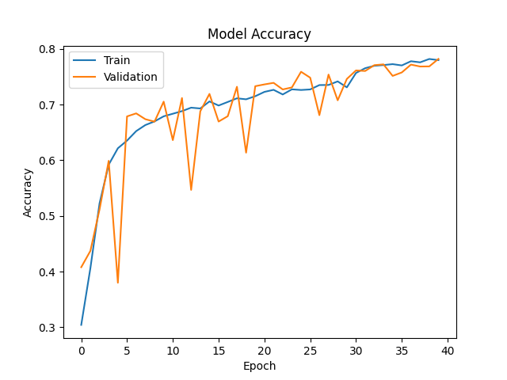
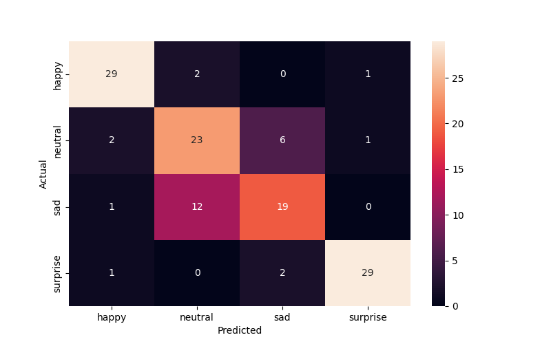

        <html>
        <head><title>Model Summary - 2024-04-10 14:30:25</title></head>
        <body>
        <h1>Model Configuration</h1>
        <pre>model:
  compile:
    learning_rate: 0.01
    optimizer: Adagrad
    optimizer_name: adam
  data:
    color_layers: 1
    color_mode: grayscale
    img_height: 48
    img_width: 48
    use_data_loaders: true
  layers:
  - filters: 64
    kernel_size:
    - 2
    - 2
    padding: same
    type: Conv2D
  - type: BatchNormalization
  - alpha: 0.1
    type: LeakyReLU
  - pool_size:
    - 2
    - 2
    type: MaxPooling2D
  - filters: 128
    kernel_size:
    - 2
    - 2
    padding: same
    type: Conv2D
  - type: BatchNormalization
  - alpha: 0.1
    type: LeakyReLU
  - pool_size:
    - 2
    - 2
    type: MaxPooling2D
  - filters: 256
    kernel_size:
    - 2
    - 2
    padding: same
    type: Conv2D
  - type: BatchNormalization
  - alpha: 0.1
    type: LeakyReLU
  - pool_size:
    - 2
    - 2
    type: MaxPooling2D
  - filters: 512
    kernel_size:
    - 2
    - 2
    padding: same
    type: Conv2D
  - type: BatchNormalization
  - alpha: 0.1
    type: LeakyReLU
  - pool_size:
    - 2
    - 2
    type: MaxPooling2D
  - filters: 128
    kernel_size:
    - 2
    - 2
    padding: same
    type: Conv2D
  - type: BatchNormalization
  - alpha: 0.1
    type: LeakyReLU
  - pool_size:
    - 2
    - 2
    type: MaxPooling2D
  - type: Flatten
  - activation: relu
    type: Dense
    units: 512
  - activation: relu
    type: Dense
    units: 128
  - type: Dense
    units: 64
  - type: BatchNormalization
  - type: ReLU
  - activation: softmax
    type: Dense
    units: 4
  train:
    batch_size: 32
    epochs: 40
    patience: 7
</pre>
        <h1>Model Summary</h1>
        <pre>Model: "sequential"
┏━━━━━━━━━━━━━━━━━━━━━━━━━━━━━━━━━━━━━━┳━━━━━━━━━━━━━━━━━━━━━━━━━━━━━┳━━━━━━━━━━━━━━━━━┓
┃ Layer (type)                         ┃ Output Shape                ┃         Param # ┃
┡━━━━━━━━━━━━━━━━━━━━━━━━━━━━━━━━━━━━━━╇━━━━━━━━━━━━━━━━━━━━━━━━━━━━━╇━━━━━━━━━━━━━━━━━┩
│ conv2d (Conv2D)                      │ (None, 48, 48, 64)          │             320 │
├──────────────────────────────────────┼─────────────────────────────┼─────────────────┤
│ batch_normalization                  │ (None, 48, 48, 64)          │             256 │
│ (BatchNormalization)                 │                             │                 │
├──────────────────────────────────────┼─────────────────────────────┼─────────────────┤
│ leaky_re_lu (LeakyReLU)              │ (None, 48, 48, 64)          │               0 │
├──────────────────────────────────────┼─────────────────────────────┼─────────────────┤
│ max_pooling2d (MaxPooling2D)         │ (None, 24, 24, 64)          │               0 │
├──────────────────────────────────────┼─────────────────────────────┼─────────────────┤
│ conv2d_1 (Conv2D)                    │ (None, 24, 24, 128)         │          32,896 │
├──────────────────────────────────────┼─────────────────────────────┼─────────────────┤
│ batch_normalization_1                │ (None, 24, 24, 128)         │             512 │
│ (BatchNormalization)                 │                             │                 │
├──────────────────────────────────────┼─────────────────────────────┼─────────────────┤
│ leaky_re_lu_1 (LeakyReLU)            │ (None, 24, 24, 128)         │               0 │
├──────────────────────────────────────┼─────────────────────────────┼─────────────────┤
│ max_pooling2d_1 (MaxPooling2D)       │ (None, 12, 12, 128)         │               0 │
├──────────────────────────────────────┼─────────────────────────────┼─────────────────┤
│ conv2d_2 (Conv2D)                    │ (None, 12, 12, 256)         │         131,328 │
├──────────────────────────────────────┼─────────────────────────────┼─────────────────┤
│ batch_normalization_2                │ (None, 12, 12, 256)         │           1,024 │
│ (BatchNormalization)                 │                             │                 │
├──────────────────────────────────────┼─────────────────────────────┼─────────────────┤
│ leaky_re_lu_2 (LeakyReLU)            │ (None, 12, 12, 256)         │               0 │
├──────────────────────────────────────┼─────────────────────────────┼─────────────────┤
│ max_pooling2d_2 (MaxPooling2D)       │ (None, 6, 6, 256)           │               0 │
├──────────────────────────────────────┼─────────────────────────────┼─────────────────┤
│ conv2d_3 (Conv2D)                    │ (None, 6, 6, 512)           │         524,800 │
├──────────────────────────────────────┼─────────────────────────────┼─────────────────┤
│ batch_normalization_3                │ (None, 6, 6, 512)           │           2,048 │
│ (BatchNormalization)                 │                             │                 │
├──────────────────────────────────────┼─────────────────────────────┼─────────────────┤
│ leaky_re_lu_3 (LeakyReLU)            │ (None, 6, 6, 512)           │               0 │
├──────────────────────────────────────┼─────────────────────────────┼─────────────────┤
│ max_pooling2d_3 (MaxPooling2D)       │ (None, 3, 3, 512)           │               0 │
├──────────────────────────────────────┼─────────────────────────────┼─────────────────┤
│ conv2d_4 (Conv2D)                    │ (None, 3, 3, 128)           │         262,272 │
├──────────────────────────────────────┼─────────────────────────────┼─────────────────┤
│ batch_normalization_4                │ (None, 3, 3, 128)           │             512 │
│ (BatchNormalization)                 │                             │                 │
├──────────────────────────────────────┼─────────────────────────────┼─────────────────┤
│ leaky_re_lu_4 (LeakyReLU)            │ (None, 3, 3, 128)           │               0 │
├──────────────────────────────────────┼─────────────────────────────┼─────────────────┤
│ max_pooling2d_4 (MaxPooling2D)       │ (None, 1, 1, 128)           │               0 │
├──────────────────────────────────────┼─────────────────────────────┼─────────────────┤
│ flatten (Flatten)                    │ (None, 128)                 │               0 │
├──────────────────────────────────────┼─────────────────────────────┼─────────────────┤
│ dense (Dense)                        │ (None, 512)                 │          66,048 │
├──────────────────────────────────────┼─────────────────────────────┼─────────────────┤
│ dense_1 (Dense)                      │ (None, 128)                 │          65,664 │
├──────────────────────────────────────┼─────────────────────────────┼─────────────────┤
│ dense_2 (Dense)                      │ (None, 64)                  │           8,256 │
├──────────────────────────────────────┼─────────────────────────────┼─────────────────┤
│ batch_normalization_5                │ (None, 64)                  │             256 │
│ (BatchNormalization)                 │                             │                 │
├──────────────────────────────────────┼─────────────────────────────┼─────────────────┤
│ re_lu (ReLU)                         │ (None, 64)                  │               0 │
├──────────────────────────────────────┼─────────────────────────────┼─────────────────┤
│ dense_3 (Dense)                      │ (None, 4)                   │             260 │
└──────────────────────────────────────┴─────────────────────────────┴─────────────────┘
 Total params: 1,096,452 (4.18 MB)
 Trainable params: 1,094,148 (4.17 MB)
 Non-trainable params: 2,304 (9.00 KB)
</pre>
        <h2>Test Accuracy</h2>
        <p>
1/4 ━━━━━━━━━━━━━━━━━━━━ 0s 16ms/step - accuracy: 0.9062 - loss: 0.3276
4/4 ━━━━━━━━━━━━━━━━━━━━ 0s 4ms/step - accuracy: 0.8042 - loss: 0.4596 

1/4 ━━━━━━━━━━━━━━━━━━━━ 1s 440ms/step
4/4 ━━━━━━━━━━━━━━━━━━━━ 0s 3ms/step  
</p>
        <h2>Accuracy Plot</h2>
        
        <h2>Classification Report</h2>
        <pre>              precision    recall  f1-score   support

       happy       0.88      0.91      0.89        32
     neutral       0.62      0.72      0.67        32
         sad       0.70      0.59      0.64        32
    surprise       0.94      0.91      0.92        32

    accuracy                           0.78       128
   macro avg       0.78      0.78      0.78       128
weighted avg       0.78      0.78      0.78       128

</pre>
        <h2>History</h2>
        <pre>Epoch 1: accuracy: 0.3043, loss: 1.3745, val_accuracy: 0.4079, val_loss: 1.2802, learning_rate: 0.0100
Epoch 2: accuracy: 0.4062, loss: 1.2192, val_accuracy: 0.4372, val_loss: 1.1780, learning_rate: 0.0100
Epoch 3: accuracy: 0.5227, loss: 1.0575, val_accuracy: 0.5118, val_loss: 1.2274, learning_rate: 0.0100
Epoch 4: accuracy: 0.5921, loss: 0.9549, val_accuracy: 0.5990, val_loss: 0.9414, learning_rate: 0.0100
Epoch 5: accuracy: 0.6215, loss: 0.8977, val_accuracy: 0.3799, val_loss: 1.6583, learning_rate: 0.0100
Epoch 6: accuracy: 0.6353, loss: 0.8601, val_accuracy: 0.6787, val_loss: 0.7847, learning_rate: 0.0100
Epoch 7: accuracy: 0.6523, loss: 0.8378, val_accuracy: 0.6841, val_loss: 0.7688, learning_rate: 0.0100
Epoch 8: accuracy: 0.6632, loss: 0.8132, val_accuracy: 0.6737, val_loss: 0.8005, learning_rate: 0.0100
Epoch 9: accuracy: 0.6697, loss: 0.7986, val_accuracy: 0.6693, val_loss: 0.8211, learning_rate: 0.0100
Epoch 10: accuracy: 0.6789, loss: 0.7822, val_accuracy: 0.7052, val_loss: 0.7404, learning_rate: 0.0100
Epoch 11: accuracy: 0.6835, loss: 0.7718, val_accuracy: 0.6361, val_loss: 0.8745, learning_rate: 0.0100
Epoch 12: accuracy: 0.6882, loss: 0.7670, val_accuracy: 0.7117, val_loss: 0.7241, learning_rate: 0.0100
Epoch 13: accuracy: 0.6944, loss: 0.7460, val_accuracy: 0.5467, val_loss: 1.1082, learning_rate: 0.0100
Epoch 14: accuracy: 0.6930, loss: 0.7460, val_accuracy: 0.6880, val_loss: 0.7212, learning_rate: 0.0100
Epoch 15: accuracy: 0.7056, loss: 0.7197, val_accuracy: 0.7191, val_loss: 0.7048, learning_rate: 0.0100
Epoch 16: accuracy: 0.6983, loss: 0.7349, val_accuracy: 0.6695, val_loss: 0.8473, learning_rate: 0.0100
Epoch 17: accuracy: 0.7047, loss: 0.7215, val_accuracy: 0.6791, val_loss: 0.7974, learning_rate: 0.0100
Epoch 18: accuracy: 0.7112, loss: 0.7099, val_accuracy: 0.7320, val_loss: 0.6706, learning_rate: 0.0100
Epoch 19: accuracy: 0.7094, loss: 0.7100, val_accuracy: 0.6136, val_loss: 0.8964, learning_rate: 0.0100
Epoch 20: accuracy: 0.7150, loss: 0.6999, val_accuracy: 0.7330, val_loss: 0.6511, learning_rate: 0.0100
Epoch 21: accuracy: 0.7227, loss: 0.6918, val_accuracy: 0.7362, val_loss: 0.6599, learning_rate: 0.0100
Epoch 22: accuracy: 0.7265, loss: 0.6775, val_accuracy: 0.7390, val_loss: 0.6499, learning_rate: 0.0100
Epoch 23: accuracy: 0.7181, loss: 0.6843, val_accuracy: 0.7271, val_loss: 0.6875, learning_rate: 0.0100
Epoch 24: accuracy: 0.7273, loss: 0.6747, val_accuracy: 0.7308, val_loss: 0.6445, learning_rate: 0.0100
Epoch 25: accuracy: 0.7262, loss: 0.6749, val_accuracy: 0.7589, val_loss: 0.6118, learning_rate: 0.0100
Epoch 26: accuracy: 0.7272, loss: 0.6726, val_accuracy: 0.7482, val_loss: 0.6399, learning_rate: 0.0100
Epoch 27: accuracy: 0.7350, loss: 0.6588, val_accuracy: 0.6809, val_loss: 0.7770, learning_rate: 0.0100
Epoch 28: accuracy: 0.7352, loss: 0.6535, val_accuracy: 0.7539, val_loss: 0.6173, learning_rate: 0.0100
Epoch 29: accuracy: 0.7416, loss: 0.6470, val_accuracy: 0.7077, val_loss: 0.7214, learning_rate: 0.0100
Epoch 30: accuracy: 0.7309, loss: 0.6614, val_accuracy: 0.7460, val_loss: 0.6395, learning_rate: 0.0100
Epoch 31: accuracy: 0.7568, loss: 0.6090, val_accuracy: 0.7613, val_loss: 0.5954, learning_rate: 0.0020
Epoch 32: accuracy: 0.7653, loss: 0.5924, val_accuracy: 0.7603, val_loss: 0.5975, learning_rate: 0.0020
Epoch 33: accuracy: 0.7697, loss: 0.5811, val_accuracy: 0.7707, val_loss: 0.5788, learning_rate: 0.0020
Epoch 34: accuracy: 0.7709, loss: 0.5791, val_accuracy: 0.7722, val_loss: 0.5803, learning_rate: 0.0020
Epoch 35: accuracy: 0.7726, loss: 0.5733, val_accuracy: 0.7515, val_loss: 0.6371, learning_rate: 0.0020
Epoch 36: accuracy: 0.7703, loss: 0.5676, val_accuracy: 0.7577, val_loss: 0.6001, learning_rate: 0.0020
Epoch 37: accuracy: 0.7778, loss: 0.5594, val_accuracy: 0.7718, val_loss: 0.5779, learning_rate: 0.0020
Epoch 38: accuracy: 0.7758, loss: 0.5660, val_accuracy: 0.7683, val_loss: 0.5741, learning_rate: 0.0020
Epoch 39: accuracy: 0.7819, loss: 0.5516, val_accuracy: 0.7685, val_loss: 0.5752, learning_rate: 0.0020
Epoch 40: accuracy: 0.7798, loss: 0.5512, val_accuracy: 0.7820, val_loss: 0.5608, learning_rate: 0.0020
</pre>
        <h2>Confusion Matrix</h2>
        
        <h2>Predicted Images</h2>
        
        </body>
        </html>
        